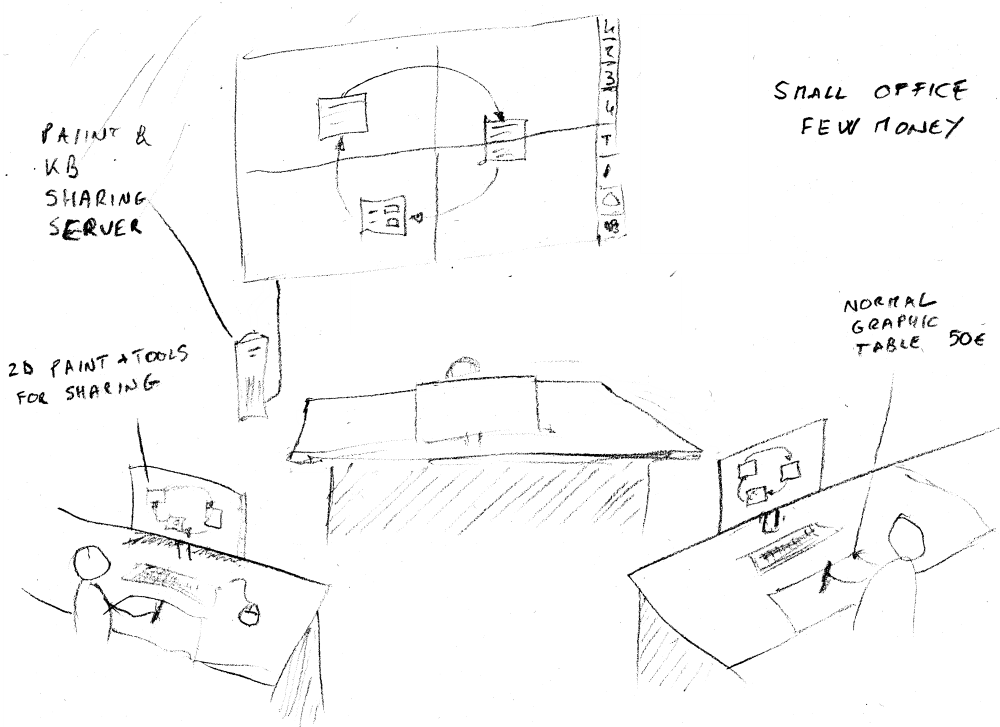

I DSM si distinguono dai db engine manager systems per una maggiore verticalizzazione che crea una figura intermedia, definita come installatore o esperto di processi aziendali. Il programmatore viene relegato allo sviluppo di funzionalità più piccole, con un'interfaccia che assomiglia più ad un wizard.
Ho lavorato molto impiegando MSAccess e non ho trovato Delphi, VB.Net, QTCreator o altri che potessero competere a paragone di tipo di applicazione. Semplici costrutti linguistici rendono immediata la connessione tra dati e rappresentazione.
Il fatto che sia tutto stipato in un unico MDB o ACCDB, ivi comprese, volendo, le specifiche di progetto e la contabilità, lo rende molto comodo. In più di un'occasione ho riciclato l'editor di form e report per generare, ad esempio, etichette per due tipi di stampanti termiche, in meno di 15gg.
Nel mondo Linux, troviamo Kexi. Questo non riesce ad emulare l'immediatezza. Troviamo invece un'analogia in Fossil (https://www.fossil-scm.org/home/doc/trunk/www/index.wiki). Fossil è un sistema che usa Sqlite come base dati ed integra una linea di comando e un webserver. Evidentemente deve riuscire a gestire grandi progetti. Ma anche se ciò non fosse, anche i grendi progetti vengono necessariamente suddivisi in sotto progetti, a causa della difficoltà di trasporto su rete.
Esistono web app come formio che forniscono già un editor facilmente integrabile con un semplice server web generato con nodejs o python.
Avere il codice stipato in righe di tabelle fornisce l'opportunità a procedure esterne di integrare features. Penso a commenti speciali come le immagini, in link alle righe. Penso alle symbol tables per controllo e ricerca semantica, nonché alla generazione di componenti collegate come CLASS<->TABLE<->FORM.
Tutto può essere rappresentato inizialmente e semplicemente in maniera tabellare. Successivamente si possono costruire tools grafici esteticamente più piacevoli, anche se meno efficaci.
"... perché non siamo Google ... non siamo Microsoft ...": quante volte ho sentito dire questa frase.
Ci sono molti altri esempi, ma vediamo la storia di Valve software, l'azienda che ha creato Steam oltre ai suoi videogiochi.
Valve ha una gerarchia molto piatta. Praticamente due livelli, cioé il capo e tutti gli altri. Tutti gli altri manutengono un manuale di uso per il dipendente. Lo si può trovare online. Mettiamo questa informazione in alto a destra nella nostra lavagna eidetica e vediamo un altro esempio.
Durante il corso sull'impostazione e il raggiungimento degli obiettivi, ebbi il piacere di ascoltare la storia del numero due di Diesel. Questi raccontò che, smontato e misurato un jeans della Levis, questo non era riproducibile secondo quanto appreso a scuola.
Quando si dice che l'immaginazione è tutto, si intende che senza di essa non si può andare oltre i limiti del conosciuto.
Quando ho appreso l'uso della mappe mentali per lo sviluppo creativo delle idee, ho pensato che una mappa condivisa potrebbe far esplodere la creatività.
Per questo ho pensato ad un ambiente di lavoro in cui le postazioni sono dotate di tavolette grafiche semplici (50€) o Wacom Cintic (2000€) con software di disegno organico condiviso.
Integrato in un software documentale e di knowledge-sharing, si potrebbe elevare esponenzialmente la produttività.
Penso che a tutti piacerebbe sapere esattamente cosa passa per la testa del collega, per potersi integrare meglio al fine del raggiungimento dell'obiettivo. Sappiamo che ciò è impossibile. Fase di selezione a parte, sarebbe più efficace sapere che entrambi si è già "settati" su comuni parametri. Ciò già avviene in parte, diciamo per imposizione dal livello superiore e dall'ambiente, trasceso attraverso il contratto nazionale del lavoro. Queste influenze verticali ed orizzontali possono cozzare e dare svantaggi.
Un individuo, indipendentemente dal tipo di contratto (dipendente o autonomo) si troverà nella condizione implicita (cioè inconscia) di seguire un ordine oppure metterci del proprio. Benché piaccia l'idea di un cervello multi-tasking, la realtà è che quando funziona in questa maniera, una parte non sa cosa sta facendo l'altra. Pensiamo ad esempio alla guida automatica. Ciò non impedisce gli incidenti, quando l'evento è fortemente lontano dal nostro dominio cosciente.
Tolto che, se avessero realizzato la carta d'identità digitale proposta nel 1997, in coda agli sportelli oggi ci sarebbero solo i pensionati, ecco due sistemi per ridurre le code ed evitare sprechi di carta chimica.
Il primo consiste in un semplice terminale android wifi con interfaccia web. Più flessibile del classico contatore a led rossi, può accettare prenotazioni remote o locali tramite cellulare, pc o chiosco per chi fosse sprovvisto dei primi due. Il chiosco produrrà il token di prenotazione attraverso il classico biglietto stampato o con il seguente.
Il secondo sistema consiste in un gettone RF riciclabile e servito da un distributore. Il gettone sblocchera l'attività dello sportello, impedendo il tagliacode dei furbi. Potrà anche essere fatto pagare per evitare che gli impazienti o i distratti se ne impossessino.
Quest'ultimo progetto è stato proposto e bocciato in quanto si è sostenuto che scatenerebbe il panico tra gli anziani, soprattutto quando si vedrebbero superare da numeri più bassi, poiché riciclati. Ciò è facilmente superabile.
Dall'esperienza di Tavolinux, una versione web, ridotta e ottimizzata per l'accoglienza e la distribuzione nelle feste di paese. si integra con il "Segnaposto tagliacode".
Anche questo progetto è stato cassato con il motivo che molta gente, soprattutto gli anziani, non sono dotati di smartphone o delle competenze necessarie. Pare che nell'idea di molti, "l'anziano" sia meno intelligente della prima schimmia che compì un gesto rivoluzionario e che fu copiato ed evoluto dagli altri primati. E' proprio la soluzione a questo problema ciò in cui consiste il risparmio e lo stimolo. Personalmente ho parlato con una signora di 75 anni che ha sempre trovato mostruosi i computers ma non ha avuto nessuna difficoltà ad impiegare un tablet.
Durante uno dei corsi di cucina che ho seguito, ho potuto ammirare come lo cheff riuscisse a realizzare le quattro portate in poco più di un'ora. Consapevole di questi tempi e con l'aiuto di qualche nuova tecnica appresa, da subito ho potuto realizzare dal 25% al 50% delle stesse, nello medesimo arco temporale.
Partecipando direttamente alla ristrutturazione dell'immobile acquisito per la famiglia, oltre ad essermi pentito di non aver messo qualche scatola in più per ospitare i trasformatori delle centraline eletroniche autoassemblate, mi sono chiesto se non si potesse cambiare il modo di vedere e usare la cucina.
Pensiamo ad una combinazione tra un elettrodomestico come il Bimbi, i noodles pronti in tre minuti e l'alimentazione degli astronauti, nonché alle cure nutrizionali che dovremmo seguire almeno dal lunedì al venerdì.
Una volta alla settimana si ordina la cena o ci si reca in un centro di produzione esterno. Uno scalda vivande elettrico è più efficacie di un fornello a gas. Può non essere altrettanto efficiente ma si può compensare contenendo altri costi del processo, come la pulizia ad esempio.
Bisogna probabilmente rinunciare alla tavola imbandita, al tempo della comvivialità e ai piatti liberty.
Tuttavia ci sono molti servizi che necessitano di una mensa "a portata di mano", poiché per tempo, norme, qualità e logistica, non è possibile avere un proprio centro di produzione, sebbene si abbia anche già a disposizione una cucina professionale
.Questo è solo uno dei tanti metodi che ho pensato per arginare l'abuso del tempo delle persone.
Ogni qualvolta si riceve una chiamata indesiderata da un operatore che offre un prodotto commerciale, magari mascherato, la digitazione del numero XXXX, durante o dopo la telefonata, produrrebbe: